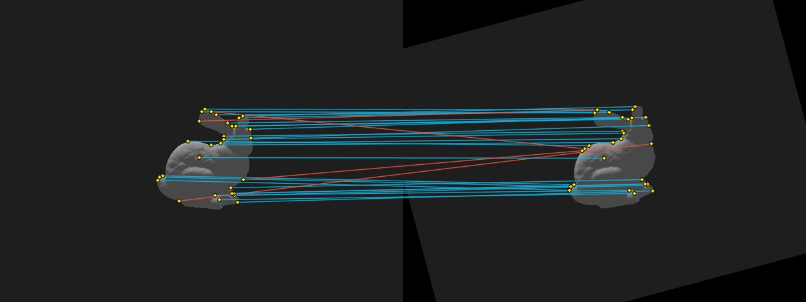
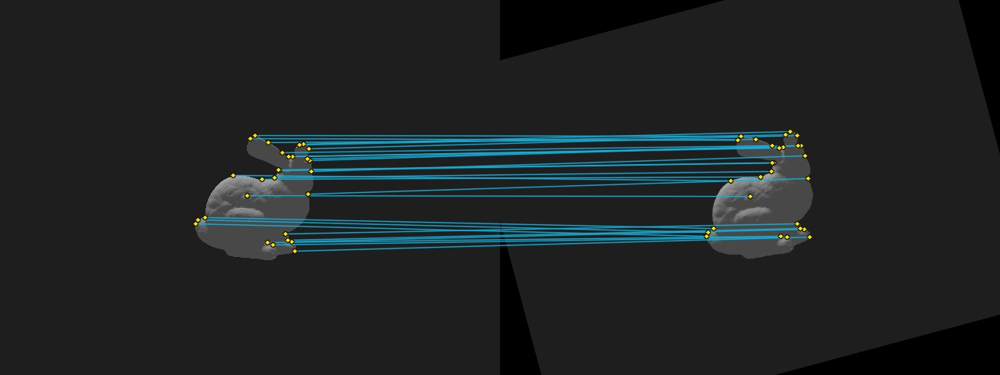

OpenCV ORB correspondences
OpenCV ORB detector and BRIEF-style descriptors. 2 pyramid levels, scale 1.2, FAST threshold 30, 150 features/level (nominal for scratch). Mutual nearest-neighbour Hamming matching, no distance cutoff. Ground-truth homography, reprojection error ≤ 3px. Display only: 30 spatially separated matches (of 46).

| Dataset / sequence | synthetic / bunny |
|---|---|
| Pair | rotation_15 |
| Image files | bunny.png → bunny.png |
| Keypoints i / j | 89 / 69 |
| Raw mutual Hamming matches | 46 |
| Filtered matches | 46 |
| GT correct matches | 42 |
| GT incorrect matches | 4 |
| Matching precision (GT) | 91.3% |
| Keypoint repeatability (GT) | 49.4% |
| Extract image i / j | 2.060 / 1.184 ms |
| Descriptor matching time | 0.280 ms |
| Drawn matches (visual only) | 30 |
Scratch ORB correspondences
Original C++ FAST/Harris-style pyramid + rotated BRIEF descriptors. 2 pyramid levels, scale 1.2, FAST threshold 30, 150 features/level (nominal for scratch). Mutual nearest-neighbour Hamming matching, no distance cutoff. Ground-truth homography, reprojection error ≤ 3px. Display only: 28 spatially separated matches (of 46).

| Dataset / sequence | synthetic / bunny |
|---|---|
| Pair | rotation_15 |
| Image files | bunny.png → bunny.png |
| Keypoints i / j | 103 / 67 |
| Raw mutual Hamming matches | 46 |
| Filtered matches | 46 |
| GT correct matches | 45 |
| GT incorrect matches | 1 |
| Matching precision (GT) | 97.8% |
| Keypoint repeatability (GT) | 54.4% |
| Extract image i / j | 30.561 / 32.115 ms |
| Descriptor matching time | 0.184 ms |
| Drawn matches (visual only) | 28 |
How to read these results
Keypoints: counts reported by the extractors, without visualization thinning. Raw mutual matches: reciprocal nearest-neighbour descriptor matches by Hamming distance. Filtered matches: after any optional descriptor-distance cutoff (default: none).
Inliers / outliers: for Oxford, HPatches, or synthetic pairs, correctness is decided from a supplied homography at the chosen pixel threshold. For TUM, KITTI, and arbitrary video, an estimated fundamental matrix is used to label geometric consistency; it is not ground truth, a PnP classification, or proof of pose accuracy.
Visualization: just a small spatially separated selection of matches is drawn. No match or keypoint is discarded from the CSV or numerical metrics due to drawing limits. Extraction time: algorithm runtime (excludes image loading / subprocess overhead).